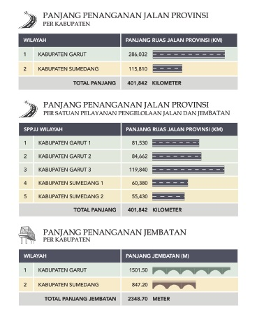

UPTD Wilayah Pelayanan IV bertanggung jawab mengelola dan memelihara
jalan dan jembatan yang mencakup Kabupaten Sumedang & Kabupaten
Garut
UPTD Wilayah Pelayanan IV merupakan salah satu unit
di dalam lembaga Dinas Bina Marga & Penataan Ruang Provinsi Jawa Barat
yang bertanggung jawab untuk memelihara dan mengelola infrastruktur
jalan & jembatan. Wilayah cakupannya meliputi: Kabupaten Sumedang dan
Kabupaten Garut

Adapun tugas pokoknya yaitu
melaksanakan sebagian fungsi dinas serta kegiatan teknis penunjang
dinas, yang meliputi:
• Penyusunan petunjuk teknis pelayanan pengelolaan jalan dan
jembatan
• Penyelenggaraan pelayanan pengelolaan jalan dan jembatan
Created by AnangMulyadi. | © 2023.Humas UPTD BIMASUGAR All Right Reserved.